CAB420 - Machine Learning - Assignment 2
Alex Wilson and Christopher Ayling
Contents
Part A: SVMS and Bayes Classifiers
Support Vector Machines
1.
% Clean up clc clear close all % Load data load data_ps3_2.mat C = 1000; %Test the SVMs and compare
Set 1
svm_test(@Klinear, 1, C, set1_train, set1_test) svm_test(@Kpoly, 2, C, set1_train, set1_test) svm_test(@Kgaussian, 1, C, set1_train, set1_test) % Linear SVM had 4.46% of test examples misclassified (the lowest of the % three). Therefore, for set 1, linear SVM is best.
The interior-point-convex algorithm does not accept an initial point. Ignoring X0. Minimum found that satisfies the constraints. Optimization completed because the objective function is non-decreasing in feasible directions, to within the default value of the optimality tolerance, and constraints are satisfied to within the default value of the constraint tolerance. WARNING: 3 training examples were misclassified!!! TEST RESULTS: 0.0446 of test examples were misclassified. The interior-point-convex algorithm does not accept an initial point. Ignoring X0. Minimum found that satisfies the constraints. Optimization completed because the objective function is non-decreasing in feasible directions, to within the default value of the optimality tolerance, and constraints are satisfied to within the default value of the constraint tolerance. WARNING: 2 training examples were misclassified!!! TEST RESULTS: 0.0514 of test examples were misclassified. The interior-point-convex algorithm does not accept an initial point. Ignoring X0. Minimum found that satisfies the constraints. Optimization completed because the objective function is non-decreasing in feasible directions, to within the default value of the optimality tolerance, and constraints are satisfied to within the default value of the constraint tolerance. TEST RESULTS: 0.0571 of test examples were misclassified.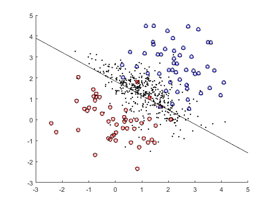
 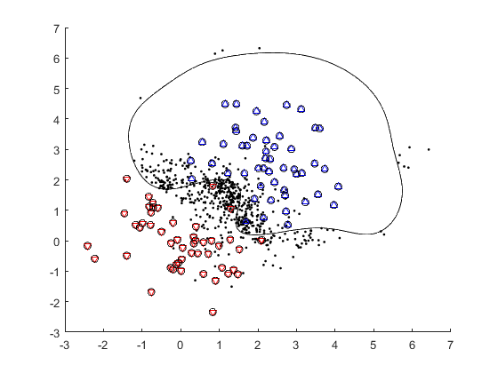
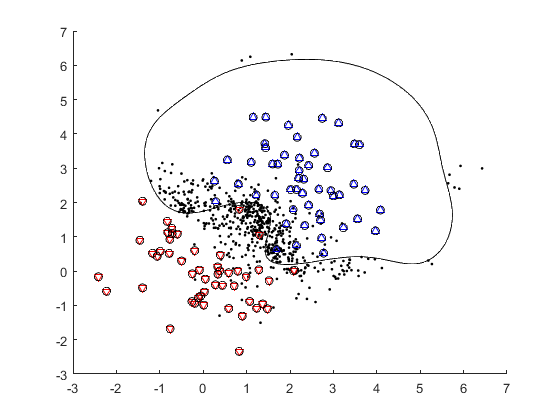 Set 2
svm_test(@Klinear, 1, C, set2_train, set2_test) svm_test(@Kpoly, 2, C, set2_train, set2_test) svm_test(@Kgaussian, 1, C, set2_train, set2_test) % Polynomial (of degree 2) SVM had 1.1% of test examples misclassifies % (the lowest of the three). Therefore, for set 2, polynomial SVM is best.
The interior-point-convex algorithm does not accept an initial point. Ignoring X0. Minimum found that satisfies the constraints. Optimization completed because the objective function is non-decreasing in feasible directions, to within the default value of the optimality tolerance, and constraints are satisfied to within the default value of the constraint tolerance. WARNING: 21 training examples were misclassified!!! TEST RESULTS: 0.273 of test examples were misclassified. The interior-point-convex algorithm does not accept an initial point. Ignoring X0. Minimum found that satisfies the constraints. Optimization completed because the objective function is non-decreasing in feasible directions, to within the default value of the optimality tolerance, and constraints are satisfied to within the default value of the constraint tolerance. TEST RESULTS: 0.011 of test examples were misclassified. The interior-point-convex algorithm does not accept an initial point. Ignoring X0. Minimum found that satisfies the constraints. Optimization completed because the objective function is non-decreasing in feasible directions, to within the default value of the optimality tolerance, and constraints are satisfied to within the default value of the constraint tolerance. TEST RESULTS: 0.014 of test examples were misclassified.

Set 3
svm_test(@Klinear, 1, C, set3_train, set3_test) svm_test(@Kpoly, 2, C, set3_train, set3_test) svm_test(@Kgaussian, 1, C, set3_train, set3_test) % Gaussian SVM had no misclassifications. Therefore, for set 3, Gaussian % SVM is best.
The interior-point-convex algorithm does not accept an initial point. Ignoring X0. Minimum found that satisfies the constraints. Optimization completed because the objective function is non-decreasing in feasible directions, to within the default value of the optimality tolerance, and constraints are satisfied to within the default value of the constraint tolerance. WARNING: 43 training examples were misclassified!!! TEST RESULTS: 0.471 of test examples were misclassified. The interior-point-convex algorithm does not accept an initial point. Ignoring X0. Minimum found that satisfies the constraints. Optimization completed because the objective function is non-decreasing in feasible directions, to within the default value of the optimality tolerance, and constraints are satisfied to within the default value of the constraint tolerance. WARNING: 10 training examples were misclassified!!! TEST RESULTS: 0.132 of test examples were misclassified. The interior-point-convex algorithm does not accept an initial point. Ignoring X0. Minimum found that satisfies the constraints. Optimization completed because the objective function is non-decreasing in feasible directions, to within the default value of the optimality tolerance, and constraints are satisfied to within the default value of the constraint tolerance. TEST RESULTS: 0 of test examples were misclassified.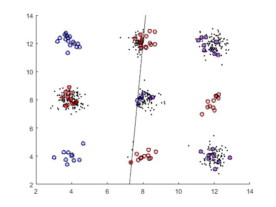 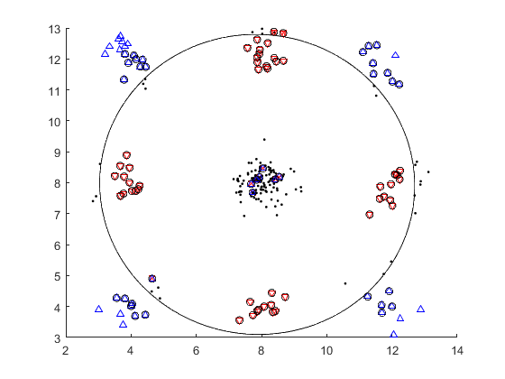 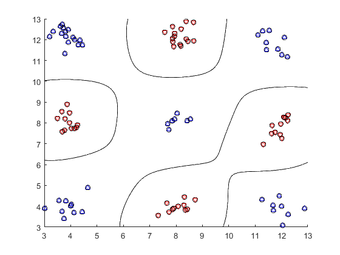
2.
clc; clear; close all; load data_ps3_2.mat C = 1000; set(gcf,'Visible', 'off');
lin_err = svm_test2(@Klinear, 1, C, set4_train, set4_test);
The interior-point-convex algorithm does not accept an initial point. Ignoring X0. Minimum found that satisfies the constraints. Optimization completed because the objective function is non-decreasing in feasible directions, to within the default value of the optimality tolerance, and constraints are satisfied to within the default value of the constraint tolerance. TEST RESULTS: 0.1375 of test examples were misclassified.

poly_err = svm_test2(@Kpoly, 2, C, set4_train, set4_test);
The interior-point-convex algorithm does not accept an initial point. Ignoring X0. Minimum found that satisfies the constraints. Optimization completed because the objective function is non-decreasing in feasible directions, to within the default value of the optimality tolerance, and constraints are satisfied to within the default value of the constraint tolerance. TEST RESULTS: 0.12 of test examples were misclassified.
gauss_err = svm_test2(@Kgaussian, 1.5, C, set4_train, set4_test);
The interior-point-convex algorithm does not accept an initial point. Ignoring X0. Minimum found that satisfies the constraints. Optimization completed because the objective function is non-decreasing in feasible directions, to within the default value of the optimality tolerance, and constraints are satisfied to within the default value of the constraint tolerance. TEST RESULTS: 0.085 of test examples were misclassified.

Comparison to Logistic Regression Classifier A logistic regression classifier was built using the Python programming language and Keras library. The result of which are below. For implementation details see the attatched `logistic_regression.pdf`.
Accuracy
Bayes Classifiers
(a)
Probabilities needed for joint Bayes classifier can be found by counting the number of occurances of each possible x1 x2 combination ([0,0] [0,1] [1,0] [1,1]). Then finding how many of each of these assosiate with each class. E.g.
Where
Where
Therefore, the complete class predictions on the test set looks as follows:
x1 | x2 | P(y=0|x) | P(y=1|x) | y-hat 0 | 1 | 25% | 75% | 1 1 | 0 | 100% | 0% | 0 1 | 1 | 60% | 40% | 0
(b)
To create a Naive Bayes classifier first the probabilities of each class will be needed:
Next, the probability that each x could be in each class:
y=0 | y=1 x1 | 6/8 | 2/8 x2 | 4/8 | 5/8
To classify the test set P(x|y) is calculated for each combination seen in the test set, on each class

![$$ P(x=[1,0]\ |\ y=1) = P(x_1\ |\ y)\cdot P(x_2\ |\ y)$$](report_eq04403787839525975183.png)
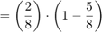
Next the P(x) is calculated with the formula
on all test data values of x.

Finally, the probability of y given each x value can be found by using Bayes rule:

On x=[0,1]:

Therefore:
And on x=[1,0]:
Therefore:
And on x=[1,1]:
Therefore:
Therefore, the complete class predictions on the test set using Naive Bayes looks as follows:
x1 | x2 | P(y=0|x) | P(y=1|x) | y-hat 0 | 1 | 21% | 79% | 1 1 | 0 | 80% | 20% | 0 1 | 1 | 71% | 29% | 0
Part B: PCA & Clustering
EigenFaces
clear;
X = load('data/faces.txt')/255;
img = reshape(X(1,:), [24, 24]); imagesc(img); axis square; colormap gray; title('Example Face')
(a) Subtract the mean to make data non zero and take SVD
[m, n] = size(X); mu = mean(X); X0 = bsxfun(@minus, X, mu); sigma = std(X0); X0 = bsxfun(@rdivide, X0, sigma); [U, S, V] = svd(X0); W=U*S;
(b) Compute approximation to X0 for K=1...10
ks = 1:10; mserrs = zeros(length(ks)); for i=1:length(ks) X0_hat = W(:, 1:ks(i))*V(:, 1:ks(i))'; mserrs(i) = mean(mean((X0-X0_hat).^2)); end figure(); hold on; plot(ks, mserrs); title('Mean Squared Error Vs K'); xlabel('K'); ylabel('MSE'); hold off;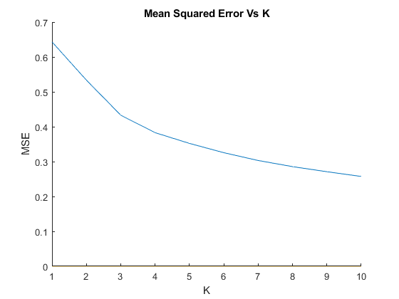
(c) Display the first few principle directions.
positive_pcs = {};
negative_pcs = {};
for j=1:10
alpha = 2*median(abs(W(:, j)));
positive_pcs{j} = mu + alpha*(V(:, j)');
negative_pcs{j} = mu - alpha*(V(:, j)');
end
for i=1:3
img = reshape(positive_pcs{i}, [24, 24]);
figure('name', sprintf('Principal Direction (Positive) %d', i));
imagesc(img);
title(sprintf('Principal Direction (Positive) %d', i));
axis square;
colormap gray;
img = reshape(negative_pcs{i}, [24, 24]);
figure('name', sprintf('Principal Direction (Negative) %d', i));
imagesc(img);
title(sprintf('Principal Direction (Negative) %d', i))
axis square;
colormap gray;
end
(d) Latent space visualisation
idx = [1:20]; figure('name', 'Latent Space Visualisation'); hold on; axis ij; colormap(gray); title('Latent Space Visualisation') xlabel('Principal Component 1'); ylabel('Principal Component 2'); range = max(W(idx, 1:2)) - min(W(idx, 1:2)); scale = [200 200]./range; for i=idx, imagesc(W(i,1)*scale(1),W(i,2)*scale(2), reshape(X(i,:), 24, 24)); end;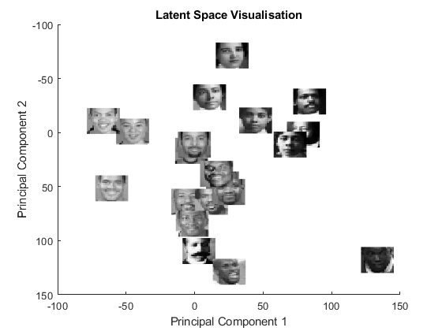
(e)
ks = [5, 10, 50]; faces = [201, 202, 203]; for f=1:length(faces)% for every face figure('name', sprintf('face %d', faces(f))); imagesc(reshape(X(faces(f),:), [24, 24])); axis square; colormap gray; title(sprintf('face %d', faces(f))); for i=1:length(ks) % for every k figure('name', sprintf('face %d reconstructed with %d pcs', faces(f), ks(i))); imagesc(reshape(W(faces(f), 1:ks(i))*V(1:576, 1:ks(i))', 24, 24)); axis square; colormap gray; title(sprintf('face %d reconstructed with %d pcs', faces(f), ks(i))); end end
Clustering
(a) Clean up
clc close all clear % Load iris data, first two features, ignore class load('iris.txt'); iris = iris(:,1:2); % Plot the data to visualise clustering scatter(iris(:,1), iris(:,2), 15, 'mo', 'filled'); hold on; title('Iris dataset');
(b)
% For k=5, initialise random centroids K1=5; initial_centroids1 = [ 4.68 4.07; 6.17 3.12; 6.52 2.71; 7.39 2.36; 6.22 2.38 ]; % For k=20, initialise random centroids K2=20; initial_centroids2 = [ 4.41 3.23; 5.37 3.24; 5.69 2.22; 5.69 3.08; 4.84 2.86; 5.83 2.91; 5.28 2.36; 6.84 2.70; 5.47 4.02; 5.21 3.17; 5.94 2.33; 4.97 2.08; 6.09 2.83; 4.47 3.41; 7.42 3.45; 5.06 3.73; 7.07 3.50; 4.94 3.55; 7.03 2.87; 7.62 2.90 ]; centroids1 = initial_centroids1; centroids2 = initial_centroids2; % Perform k-means on the data with 10 iterations, k=5 and k=20 for i = 1:10 idx1 = findClosestCentroids(iris, centroids1); idx2 = findClosestCentroids(iris, centroids2); centroids1 = computeCentroids(iris, idx1, K1); centroids2 = computeCentroids(iris, idx2, K2); end % Plot final centroids of k=5 figure; hold on; plotDataPoints(iris, idx1, K1); plot(centroids1(:,1), centroids1(:,2), 'x', ... 'MarkerEdgeColor','k', ... 'MarkerSize', 10, 'LineWidth', 3); title('K-means clustering where k=5'); % Plot final centroids of k=20 figure; hold on; plotDataPoints(iris, idx2, K2); plot(centroids2(:,1), centroids2(:,2), 'x', ... 'MarkerEdgeColor','k', ... 'MarkerSize', 10, 'LineWidth', 3); title('K-means clustering where k=20');
(c) Agglomerative clustering Compute the single, and complete linkage
sLink = linkage(iris, 'single'); cLink = linkage(iris, 'complete'); % Plot single linkage, 5 clusters palette5 = hsv(5); palette20 = hsv(20); clust = cluster(sLink, 'maxclust', 5); figure; scatter(iris(:,1), iris(:,2), 15, palette5(clust,:), 'filled'); title('Single linkage agglomerative clustering, 5 clusters'); % Plot single linkage, 20 clusters clust = cluster(sLink, 'maxclust', 20); figure; scatter(iris(:,1), iris(:,2), 15, palette20(clust,:), 'filled'); title('Single linkage agglomerative clustering, 20 clusters'); % Plot complete linkage, 5 clusters clust = cluster(cLink, 'maxclust', 5); figure; scatter(iris(:,1), iris(:,2), 15, palette5(clust,:), 'filled'); title('Complete linkage agglomerative clustering, 5 clusters'); % Plot complete linkage, 20 clusters clust = cluster(cLink, 'maxclust', 20); figure; scatter(iris(:,1), iris(:,2), 15, palette20(clust,:), 'filled'); title('Complete linkage agglomerative clustering, 20 clusters');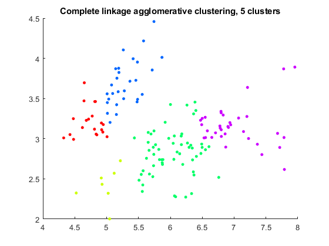
(d) Reset
clear; % Load data load('iris.txt'); iris = [iris(:,1), iris(:,2)]; % Start with 5 components % Good initialisation vectors found through trial and error K = 5; initial_clusters = [ 5.0 3.5; 5.0 2.5; 5.7 2.7; 6.5 3.0; 5.2 3.9; ]; % Perform EM on Gaussian mixture model [assign, clusters, soft, loglikelihd] = emCluster(iris, 5, initial_clusters); % Plot the results palette5 = hsv(5); palette20 = hsv(20); figure; hold on; scatter(iris(:,1), iris(:,2), 15, palette5(assign,:), 'filled'); for i = 1:K plotGauss2D(clusters.mu(i,:), clusters.Sig(:,:,i), 'k', 'linewidth', 1); end title('EM Gausian Mixture Model with 5 Components'); % Next using 20 components % Good initialisation vectors found through trial and error K = 20; initial_clusters = [ 6.4913 2.9333; 4.4814 2.9917; 6.2679 2.9460; 6.8588 3.0600; 4.7738 3.2812; 4.9284 2.4325; 5.7432 3.0969; 7.7151 2.8911; 5.8724 2.7003; 6.4796 2.8164; 6.3604 2.5873; 5.4780 3.4583; 7.9528 3.8910; 6.4738 3.2295; 6.4996 3.2526; 6.1055 2.8347; 4.3266 3.0099; 4.9465 3.1763; 5.1536 3.3008; 4.8142 3.4620; ]; % Perform EM on Gaussian mixture model [assign, clusters, soft, loglikelihd] = emCluster(iris, 20, initial_clusters); % Plot the results figure; hold on; scatter(iris(:,1), iris(:,2), 15, palette20(assign,:), 'filled'); for i = 1:K plotGauss2D(clusters.mu(i,:), clusters.Sig(:,:,i), 'k', 'linewidth', 1); end title('EM Gausian ixture Model with 20 Components');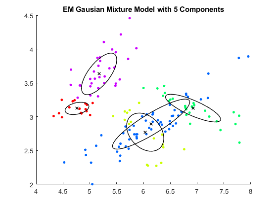 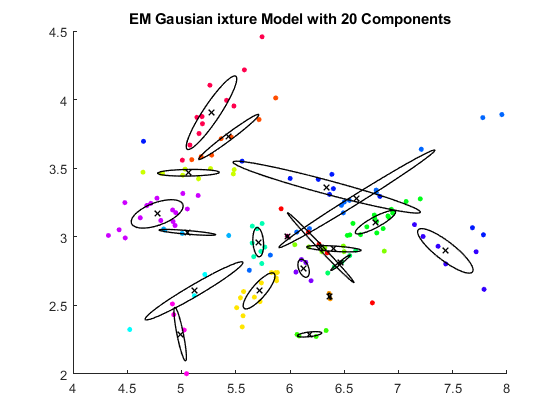
Due to the way in which EM Gaussian mixture frequently overlaps multiple clusters, it may not be the most suitable classifying technique on this data.
Agglomerative clustering with single linkage also seems like it poorly classifies this data, having huge variance in cluster size. Complete linkage howevever shows very reasonable clusters, holding integrity even with 20 clusters.
K-means clustering also seems very reasonable, much like agglomerative methods. However, requireing initial clusters is certainly a downside. Error can depend greatly on the initialisation. This problem is also seen in the EM Gaussian mixture method.
Overall, complete linkage agglomerative clustering is the most reasonable method.
clc; clear; close all;